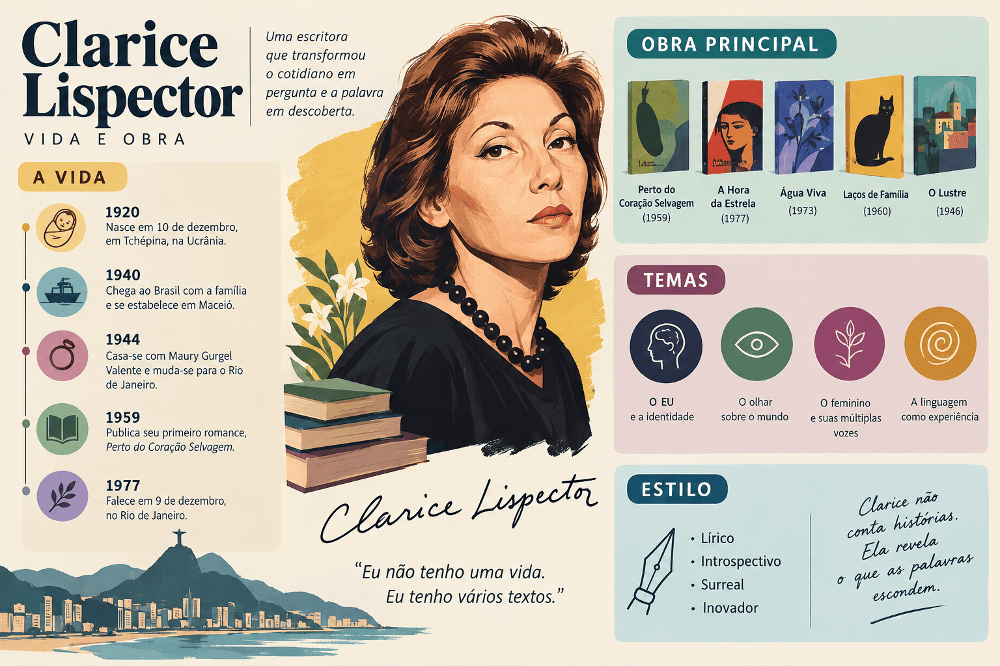

Clarice Lispector: vida, obras e características literárias
Clarice Lispector foi uma das maiores escritoras da literatura em língua portuguesa e uma das vozes mais originais da ficção do século XX. Autora de romances célebres como Perto do Coração Selvagem, A Paixão Segundo G.H. e A Hora da Estrela, transformou a prosa brasileira ao transferir o foco da narrativa dos acontecimentos externos para as profundezas da consciência, da percepção sensorial e da angústia existencial.
Sua produção literária combina fluxo de consciência, densidade lírica, reflexão metafísica, metalinguagem e a marcante experiência da epifania — a revelação súbita que desarticula a rotina dos personagens diante de um fato corriqueiro. Integrante de destaque da Terceira Geração do Modernismo brasileiro (a Geração de 45), Clarice permanece como uma das autoras mais cobradas no Ensino Médio, no ENEM, nos vestibulares e em cursos de Letras.

Clarice Lispector em resumo:
- Nome de batismo: Haia Pinkhasivna Lispector (adotou o nome Clarice ao chegar ao Brasil);
- Nascimento: 10 de dezembro de 1920, em Chechelnyk, Ucrânia;
- Chegada ao Brasil: 1922, vivendo a infância em Maceió e Recife, e fixando-se no Rio de Janeiro;
- Falecimento: 9 de dezembro de 1977, no Rio de Janeiro;
- Atuação: escritora, romancista, contista, cronista, tradutora e jornalista;
- Período literário: Terceira Geração Modernista (Geração de 45);
- Principais obras: Perto do Coração Selvagem (1943), Laços de Família (1960), A Paixão Segundo G.H. (1964) e A Hora da Estrela (1977);
- Temas centrais: epifania do cotidiano, aprisionamento doméstico da mulher, crise da linguagem, busca da identidade e solidão existencial;
- Estilo: tempo psicológico, monólogo interior, quebra da linearidade, prosa poética e metalinguagem.
Quem foi Clarice Lispector?
Clarice Lispector nasceu em 10 de dezembro de 1920 na aldeia ucraniana de Chechelnyk, no contexto da fuga de sua família judaica perante os conflitos e as perseguições antissemitas dos pogroms decorrentes da Guerra Civil Russa. Chegou ao Brasil ainda bebê, em 1922, passando os primeiros anos em Maceió e, a partir de 1925, no Recife.
Na capital pernambucana, residiu no tradicional bairro da Boa Vista. Aos nove anos de idade, sofreu a dolorosa perda de sua mãe, Mania Lispector, acontecimento que marcou sua visão sobre a fragilidade humana e a dor da memória. Em 1935, a família mudou-se para o Rio de Janeiro, cidade onde Clarice completou seus estudos secundários e acadêmicos.
Ingressou na Faculdade Nacional de Direito da Universidade do Brasil (atual UFRJ), formando-se em 1943. Paralelamente, ingressou na carreira jornalística, escrevendo reportagens, colunas e crônicas para a Agência Nacional, o jornal A Noite e o Diário da Noite. A prática jornalística acompanhou toda a sua vida criativa.
Aos 23 anos, estreou na literatura com o romance Perto do Coração Selvagem (1943). O livro causou impacto na crítica da época devido à maturidade estética e ao rompimento com o modelo documental que dominava o romance brasileiro, rendendo-lhe o Prêmio Graça Aranha.
Casada com o diplomata Maury Gurgel Valente, viveu cerca de quinze anos no exterior, residindo na Itália, Suíça, Inglaterra e Estados Unidos. Em 1959, separou-se e retornou com os filhos ao Rio de Janeiro, consolidando uma das fases mais férteis de sua carreira com a publicação de grandes volumes de contos, romances, crônicas e livros infantis.
Linha do tempo de Clarice Lispector
| Ano | Acontecimento |
|---|---|
| 1920 | Nasce na Ucrânia durante a travessia de sua família em direção à América. |
| 1922 | Chega ao Brasil com a família e estabelece-se em Maceió (AL). |
| 1925 | Transfere-se para o Recife (PE), onde passa a infância e inicia sua escolarização. |
| 1930 | Falecimento de sua mãe, Mania Lispector. |
| 1935 | Muda-se para o Rio de Janeiro com o pai e as duas irmãs. |
| 1939–1943 | Cursa a Faculdade Nacional de Direito e atua como redatora e repórter jornalística. |
| 1943 | Publica seu romance inaugural, Perto do Coração Selvagem, e conquista o Prêmio Graça Aranha. |
| 1944–1959 | Vive no exterior como esposa de diplomata; publica O Lustre (1946) e A Cidade Sitiada (1949). |
| 1960 | Retorna definitivamente ao Rio de Janeiro e publica a célebre coletânea de contos Laços de Família. |
| 1964 | Lança A Paixão Segundo G.H. e o livro de contos A Legião Estrangeira. |
| 1966 | Sofre ferimentos graves após incêndio acidental em seu quarto no Rio de Janeiro. |
| 1973 | Publica Água Viva, obra de intensa liberdade poética e reflexão existencial. |
| 1977 | Lança A Hora da Estrela; falece no Rio de Janeiro em 9 de dezembro, vítima de câncer. |
Clarice Lispector e a Terceira Geração Modernista
Clarice Lispector insere-se na prosa da Terceira Geração do Modernismo brasileiro, marco estético consolidado a partir de 1945. Se a geração anterior (Geração de 30) primava pelo regionalismo de combate, pela crueza das denúncias socioeconômicas e pelo tom documental — como visto em Graciliano Ramos e Jorge Amado —, a Geração de 45 inaugurou uma nova atitude estética pautada pelo rigor da forma e pela investigação interior.
Nessa fase, a prosa de ficção bifurcou-se em duas vertentes capitais:
- O regionalismo experimental e metafísico: liderado por Guimarães Rosa, recriando a fala sertaneja para discutir grandes temas morais e ontológicos;
- O romance intimista e psicológico: conduzido por Clarice Lispector, centrado na dissecação das emoções íntimas, na percepção do ser e nos limites da própria linguagem.
Clarice não ignorava a realidade objetiva: ela a subvertia, demonstrando que os acontecimentos exteriores só ganham sentido literário a partir do impacto que provocam na consciência humana.
Principais obras de Clarice Lispector
A obra clariceana percorre o romance, a crônica e o conto com rigor e originalidade. Dentre suas obras mais consagradas e recorrentes em provas de literatura, destacam-se:
1. Perto do Coração Selvagem (1943)
Romance que projetou a autora nacionalmente. Acompanha a trajetória interna de Joana, personagem que recusa o moralismo convencional e reflete sobre o casamento, o desejo e a solidão. A narrativa rompe com a ordem cronológica, estruturando-se a partir de flashes de memória e monólogos reflexivos.
2. Laços de Família (1960)
Coletânea clássica de contos que analisa as tensões e os descompassos afetivos sob a fachada do ambiente doméstico burguês. Em contos como "Amor", "A Imitação da Rosa" e "Feliz Aniversário", pequenos incidentes cotidianos provocam desestabilizações profundas na identidade das protagonistas femininas.
3. A Paixão Segundo G.H. (1964)
Um dos romances mais audaciosos da ficção moderna. A protagonista, uma mulher elegante identificada apenas como G.H., depara-se com uma barata no quarto de serviço. Ao esmagá-la e experimentar a massa branca do inseto, vivencia uma vertiginosa perda de sua identidade social, entrando em comunhão dolorosa com a matéria viva e desprovida de adornos culturais.
4. A Hora da Estrela (1977)
Último romance publicado em vida por Clarice. Relata o destino de Macabéa, jovem órfã alagoana e migrante no Rio de Janeiro que vive na miséria material e afetiva. A grande força da narrativa está na mediação do narrador Rodrigo S.M., que expõe seu desconforto ético e sua culpa de classe ao tentar dar voz a uma criatura socialmente invisível.
“Ela não sabia que ela era ela. Como uma cadela não sabe que é cadela.” — Clarice Lispector, em A Hora da Estrela
Principais temas da obra de Clarice Lispector
- A epifania e o estranhamento do cotidiano: o instante em que objetos banais desencadeiam revelações ontológicas que desarmam o indivíduo;
- A crise e os limites da linguagem: a luta contra a incapacidade das palavras de exprimir a totalidade da experiência humana;
- O aprisionamento feminino no ambiente doméstico: o questionamento dos papéis tradicionais de esposa, mãe e cuidadora na ordem patriarcal;
- O fluxo de consciência e a introspecção: a representação imediata dos estados mentais e do inconsciente sem filtros lógicos;
- A despersonalização e o vazio interior: o colapso das certezas que sustentam o ego civilizado;
- A invisibilidade social e a miséria urbana: a exclusão social abordada sem sentimentalismo em A Hora da Estrela;
- A metalinguagem constante: a interrogação crítica sobre a responsabilidade e o sofrimento do ato criador.
Características literárias de Clarice Lispector
Sondagem psicológica e fluxo de consciência
Clarice subverte a centralidade do enredo clássico: em vez de sucessões de acontecimentos materiais, constrói narrativas pautadas pelos movimentos da consciência, capturando impressões sensoriais, hesitações e devaneios que emergem sem aviso prévio.
O tempo psicológico
A linearidade cronológica do relógio é substituída pelo tempo interior. Um intervalo de poucos minutos — como uma viagem de bonde ou a observação de um quadro — pode se dilatar em dezenas de páginas de densa reflexão subjetiva.
Linguagem sensorial e lírica
Sua prosa mobiliza sinestesias, paradoxos e imagens de forte impacto visual e tátil. A palavra em Clarice não se limita a descrever fatos; ela busca tocar na matéria viva e evocar sensações corporais imediatas.
Metalinguagem e compromisso ético
Em suas principais obras, o ato de escrever é problematizado diante do leitor. Narrar deixa de ser uma tarefa decorativa para se tornar uma dolorosa interrogação sobre quem tem o direito de contar a história e como traduzir a experiência alheia sem traí-la.
A epifania e o cotidiano clariceano
Para Clarice Lispector, o cotidiano das cidades e dos lares não é um espaço estável, mas uma frágil construção de convenções sociais. O conceito de epifania é o motor central de seus textos, organizando-se habitualmente em três etapas:
1. A ordem superficial: a personagem vive conforme as normas burguesas, executando tarefas automáticas da rotina doméstica ou profissional.
2. O impacto epifânico: um incidente corriqueiro (a visão de um homem cego, a queda de um ovo, uma barata num armário) rompe subitamente a barreira da previsibilidade.
3. A crise existencial: o desmoronamento das certezas revela o absurdo da condição humana; ainda que a personagem retorne à sua vida prática, ela jamais voltará a ser a mesma.
Atenção: Diferente da tradição clássica, em que a epifania representa uma revelação graciosa e apaziguadora, em Clarice o choque epifânico é perturbador, desestabilizador e acompanhado de náusea e vertigem existencial.
A condição feminina na literatura de Clarice
A maioria das narrativas de Clarice Lispector é protagonizada por mulheres: jovens em formação, donas de casa zelosas, mulheres à beira da loucura e idosas confrontadas com a decrepitude do corpo. Sem aderir a discursos panfletários, a escritora elaborou uma contundente desconstrução do ideal romântico e burguês da mulher submissa.
Personagens como Ana (no conto "Amor"), Laura ("A Imitação da Rosa") e a matriarca Dona Anita ("Feliz Aniversário") evidenciam o sufocamento emocional e a solidão que se escondem por trás da fachada de casamentos pacíficos e famílias exemplares.
Quadro comparativo: A prosa das gerações modernistas
| Geração Modernista | Período de auge | Principais prosadores | Foco temático | Tratamento da linguagem |
|---|---|---|---|---|
| 1ª Geração (Fase Heroica) | 1922–1930 | Mário de Andrade, Oswald de Andrade, Alcântara Machado | Destruição do academicismo, crítica nacionalista, paródia histórica | Linguagem coloquial, fragmentação e destruição das regras tradicionais |
| 2ª Geração (Fase de Consolidação) | 1930–1945 | Graciliano Ramos, Jorge Amado, José Lins do Rego, Rachel de Queiroz | Regionalismo, denúncia das desigualdades sociais, seca e conflitos econômicos | Prosa realista, direta, engajada e de forte teor documental |
| 3ª Geração (Geração de 45) | 1945–1960 em diante | Clarice Lispector, Guimarães Rosa, Osman Lins | Sondagem psicológica, metafísica, crise do sujeito e universalismo | Rigor estilístico, fluxo de consciência, recriação vocabular e metalinguagem |
Importância e legado de Clarice Lispector
O impacto da obra de Clarice Lispector consolidou-a como uma das autoras brasileiras de maior prestígio e circulação crítica internacional, influenciando vertentes intelectuais dentro e fora do país:
- Inaugurou uma linhagem de alta densidade psicológica na narrativa brasileira;
- Transformou episódios banais em ocasiões de reflexão estética e ontológica;
- Desarticulou o modelo tradicional de romance linear de causa e efeito;
- Realizou uma análise sem precedentes da subjetividade e da opressão doméstica feminina;
- Articulou em A Hora da Estrela a denúncia da exclusão social ao questionamento da linguagem;
- Enriqueceu o repertório da língua portuguesa por meio de uma sintaxe viva, intuitiva e expressiva;
- Tornou-se fonte central de estudos sobre teoria literária, psicanálise, filosofia e gênero.
Erros comuns sobre Clarice Lispector
- Achar que era uma autora estrangeira: embora tenha nascido na Ucrânia, chegou ao país bebê, cresceu no Nordeste e no Rio de Janeiro e afirmava categoricamente sua identidade cultural brasileira;
- Supor que sua obra é desprovida de interesse social: obras como A Hora da Estrela e crônicas jornalísticas demonstram agudo olhar sobre a miséria, o preconceito de classe e a invisibilidade urbana;
- Tomar a epifania como um evento confortável: o instante epifânico clariceano desestabiliza identidades e expõe os personagens ao desamparo e à estranheza;
- Confundir sua literatura com o Regionalismo de 30: Clarice pertence cronológica e esteticamente à Terceira Geração Modernista (Geração de 45);
- Equiparar a voz do narrador diretamente à autora: ainda que explore tons íntimos, seus livros são criações ficcionais autônomas e altamente construídas;
- Achar que o fluxo de consciência resulta de escrita descuidada: trata-se de uma técnica apurada que exige rigoroso domínio estético e estilístico da linguagem.
Clarice Lispector no ENEM e nos vestibulares
Nos exames vestibulares e no ENEM, as questões sobre Clarice Lispector exigem leitura atenta de excertos em prosa e capacidade de correlacionar estilo literário e reflexão crítica. Os eixos mais frequentes são:
- Identificação da epifania: localização do momento do texto em que o personagem sofre um abalo perceptivo a partir de um fato mínimo;
- Oposição entre tempo cronológico e tempo psicológico: percepção do predomínio da duração interna da consciência;
- Metalinguagem e voz narrativa em A Hora da Estrela: a função do narrador Rodrigo S.M. e sua culpa social perante o desamparo de Macabéa;
- A crítica à condição da mulher: análise das personagens femininas presas às expectativas da sociedade patriarcal;
- Recursos estilísticos: emprego de paradoxos, metáforas insólitas, sinestesias e quebra da causalidade sintática tradicional.
Quiz sobre Clarice Lispector
Questões de interpretação — nível avançado
Questão 1 — Em relação à estética de Clarice Lispector, o que melhor define o conceito de "epifania"?
Questão 2 — No romance A Hora da Estrela, qual é o papel essencial desempenhado pelo narrador Rodrigo S.M.?
Questão 3 — Em qual geração do Modernismo brasileiro a obra de Clarice Lispector se consolida e qual é sua distinção perante a prosa da geração anterior?
Questão 4 — No conto "Amor", da coletânea Laços de Família, qual elemento cotidiano rompe a segurança doméstica de Ana?
Questão 5 — Qual das alternativas sintetiza um traço estilístico fundamental da prosa clariceana?
Resumo sobre Clarice Lispector
- Clarice Lispector nasceu na Ucrânia em 1920 e viveu no Brasil desde a infância, naturalizando-se brasileira;
- Estreou aos 23 anos com o impactante romance Perto do Coração Selvagem (1943);
- Integra a Terceira Geração do Modernismo (Geração de 45), destacando-se pelo romance intimista e psicológico;
- Entre suas obras fundamentais estão Laços de Família, A Paixão Segundo G.H. e A Hora da Estrela;
- A epifania é sua marca definidora: um abalo existencial que rasga a ordem aparente do cotidiano;
- Sua narrativa privilegia o tempo psicológico e o fluxo de consciência em vez do enredo clássico linear;
- Dissecou com pioneirismo a condição e a angústia da mulher no espaço doméstico tradicional;
- Em A Hora da Estrela, articulou a tragédia social da migrante Macabéa à metalinguagem de Rodrigo S.M.;
- Trabalhou extensamente na imprensa como repórter, cronista e entrevistadora;
- Faleceu em 1977, consagrando-se como uma das maiores autoras da literatura mundial.
Perguntas frequentes sobre Clarice Lispector
Quem foi Clarice Lispector?
Foi uma escritora, romancista, contista e jornalista brasileira nascida na Ucrânia, consagrada como uma das maiores vozes do Modernismo e referência da literatura introspectiva.
Qual é a principal obra de Clarice Lispector?
Sua obra mais célebre em vestibulares e no ENEM é A Hora da Estrela (1977), acompanhada de clássicos como Laços de Família (1960) e A Paixão Segundo G.H. (1964).
O que é epifania na obra de Clarice Lispector?
É uma iluminação ou revelação existencial súbita que ocorre a partir de um estímulo corriqueiro e insignificante, quebrando a falsa segurança da rotina do personagem.
A qual geração modernista Clarice Lispector pertence?
Pertence à Terceira Geração Modernista, também denominada Geração de 45, distinguindo-se pela investigação intimista e pela densidade estética.
O que diferencia a prosa de Clarice da prosa de 1930?
A prosa de 1930 priorizava o espaço regional, os conflitos socioeconômicos e o tom documental, enquanto Clarice deslocou o centro da narrativa para a consciência e as aflições existenciais do indivíduo.
Quem são Macabéa e Rodrigo S.M. em A Hora da Estrela?
Macabéa é a migrante alagoana empobrecida que vive na penúria no Rio de Janeiro; Rodrigo S.M. é o narrador intelectualizado que debate as implicações morais e os dilemas de contar essa história.
Como a mulher é retratada na ficção de Clarice?
É retratada despida de idealizações românticas, evidenciando as prisões invisíveis do casamento, as obrigações familiares e a busca angustiada por autonomia e identidade.
Quais recursos estilísticos marcam o texto de Clarice?
Fluxo de consciência, monólogo interior, elipses, paradoxos, metáforas sensoriais, predomínio do tempo psicológico e metalinguagem contínua.
Conteúdos relacionados
Conclusão
Clarice Lispector revolucionou a literatura brasileira ao demonstrar que os dramas mais intensos da existência não exigem grandes batalhas externas para se manifestarem: eles brotam do choque silencioso entre a consciência humana e a crueza do cotidiano.
Ao articular reflexão ontológica, questionamento social, inovação linguística e metalinguagem, sua obra desmontou as convenções da ficção tradicional e expandiu a capacidade expressiva da língua portuguesa. Por essa singularidade inconfundível, Clarice permanece indispensável para o estudo da arte literária, da sociedade e da própria condição humana.
Referências para aprofundamento
- LISPECTOR, Clarice. Perto do Coração Selvagem. Rio de Janeiro: Rocco, 1998.
- LISPECTOR, Clarice. Laços de Família. Rio de Janeiro: Rocco, 1998.
- LISPECTOR, Clarice. A Paixão Segundo G.H. Rio de Janeiro: Rocco, 1998.
- LISPECTOR, Clarice. A Hora da Estrela. Rio de Janeiro: Rocco, 1998.
- BOSI, Alfredo. História concisa da literatura brasileira. São Paulo: Cultrix, 2017.
- CANDIDO, Antonio. Vários escritos. Rio de Janeiro: Ouro sobre Azul, 2004.
- MOSER, Benjamin. Clarice,: Uma biografia. São Paulo: Cosac Naify, 2009.
- NUNES, Benedito. O drama da linguagem: uma leitura de Clarice Lispector. São Paulo: Ática, 1989.
- ROSENBAUM, Yudith. Metamorfoses do mal: uma leitura de Clarice Lispector. São Paulo: Edusp, 1999.
- Instituto Moreira Salles — Portal Oficial Clarice Lispector.
- Academia Brasileira de Letras.
Explore Outros Conteúdos
Continue seus estudos acessando outras seções do site Mestre Kira: